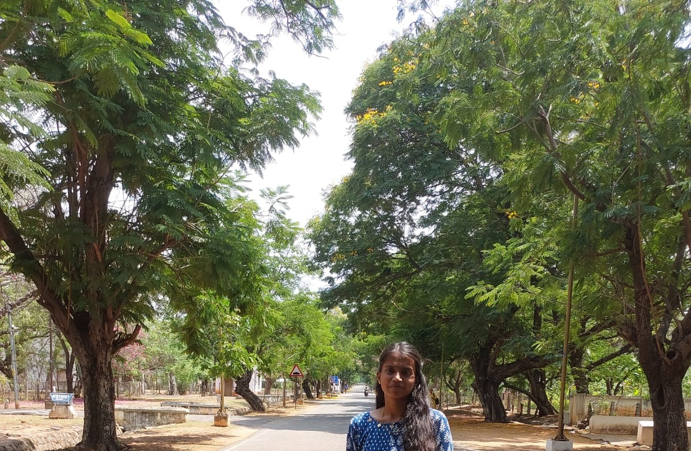

About Me
I am passionate about Cloud Computing and software development, seeking a software engineer role where I can leverage my problem-solving skills and knowledge of software lifecycle management. Eager to contribute to organization's growth, I look forward to innovating and excelling within a dynamic team environment.
I am interested in Python programming Language, HTML, SQL, AWS services, and cloud computing. Besides these, I am learning JavaScript, LINUX, and more AWS services.
I heard somewhere 'It's never to late to start learning'✌️ And there is definitely improvements to make further..
Education
-
University VOC College of Engineering
- 2019-2023
- Bachelor of Engineering - Electronics and Communication Engineering - 75%
-
Hilton Matriculation Higher Secondary School
- 2017-2019
- Higher Secondary - 72.6%
-
Hilton Matriculation Higher Secondary School
- 2013-2017
- Senior Secondary - 93.8%
Skills
- Python programming
- SQL
- AWS Services
- Cloud computing
- Javascript
Projects
- Classification of citrus fruits and leaves diseases using combined CNN and ML classifiers
- AI-powered Nutrition Analyzer for Fitness Enthusiasts
- AWS S3 select - Querying without database and servers - Workshop from AWS
- Migrating Relational database to Amazon DynamoDB